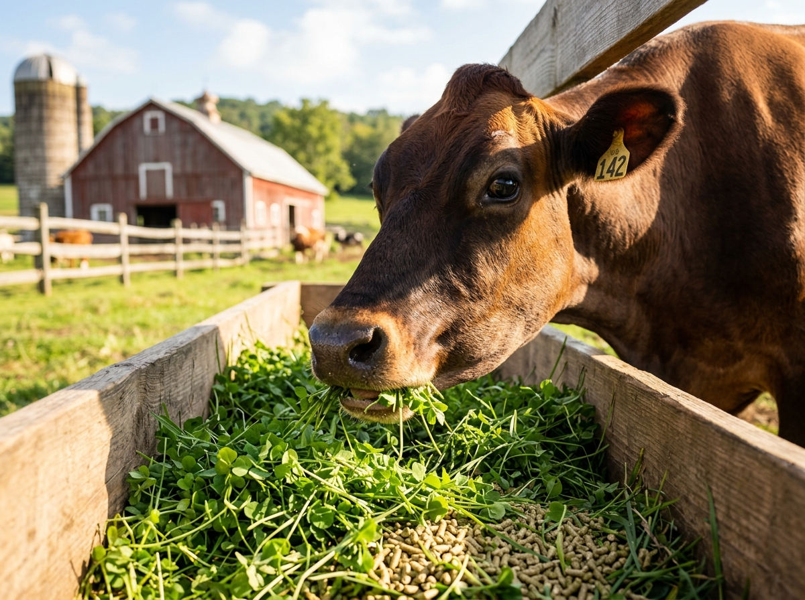

Nutrition & FeedFeeding & Daily Nutrition
Ensure well-balanced energy, protein, and minerals tailored to lactating and dry animals.
- Green & Dry Fodder: 70:30 ideal roughage ratio for rumen digestion
- Clean Water: 60-90 liters of fresh, cool water accessible 24/7
- Mineral Mixture: 50g daily salt and chelated mineral supplement